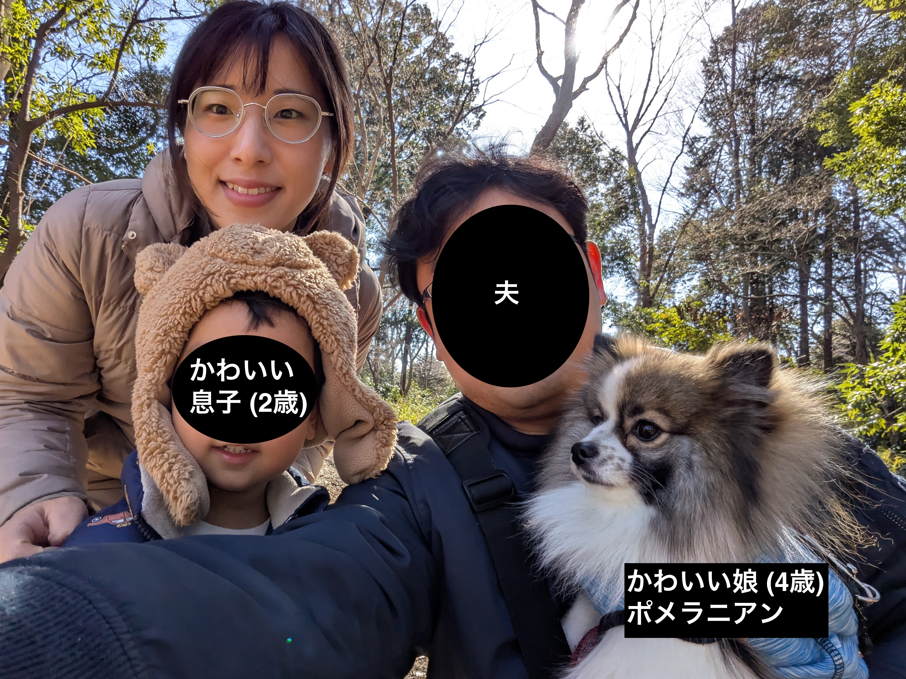

Haruka Kusakabe | 日下部 晴香
I am a researcher working on galaxy formation and evolution, in terms of the cosmic baryon cycle, using observational data primarily from VLT/MUSE, HST, and MeerKAT to study galaxies from the local to distant Universe in the Department of General Systems Studies, Graduate School of Arts and Sciences, The University of Tokyo.
I obtained my PhD from the Department of Astronomy at the University of Tokyo in 2019 under the supervision of Kazuhiro Shimasaku. Following that, I worked on the observations of the circumgalactic medium and cosmic reionization with Anne Verhamme at the University of Geneva from 2019 to 2023. From April 2023 to March 2025, I was a Japan Society for the Promotion of Science (JSPS) Postdoctoral Fellow at the Division of Science, National Astronomical Observatory of Japan (in Masami Ouchi's group). 2025年4月から東京大学大学院総合文化研究科広域科学専攻広域システム科学系 (宇宙地球部会)にて、銀河形成・進化、宇宙の物質循環の研究をしています。研究では世界最先端の大型望遠鏡を可視光から電波まで組み合わせて使っています。一緒に研究を進めてくださる学生さん大歓迎です。学部生~院生まで学年/バックグラウンド/キャリアは問いませんので、ご興味のある方がいらっしゃいましたら、お気軽に下記gmailアドレスまでご連絡ください!

News (2025年12月4日更新)
・2025年12月1日 教養学部報 第668号に寄稿 「赤ちゃん銀河から吹き出す巨大なガスバブルの発見」
・2025年7月23日 Press Release: 小さな銀河から吹き出す巨大バブルの発見
──形成初期の銀河における超新星フィードバックの解明に向けて── アストロアーツの記事 | PR記事
・2025年7月1日 教養学部報 第665号に着任の自己紹介(研究者キャリアと家庭の変遷について)を寄稿 「<時に沿って> 銀河と家族」
・2025年7月23日 Press Release: 小さな銀河から吹き出す巨大バブルの発見
──形成初期の銀河における超新星フィードバックの解明に向けて── アストロアーツの記事 | PR記事
・2025年7月1日 教養学部報 第665号に着任の自己紹介(研究者キャリアと家庭の変遷について)を寄稿 「<時に沿って> 銀河と家族」

大学院生の受け入れ/指導について (2025年7月25日更新)
東京大学大学院総合文化研究科広域科学専攻広域システム科学系（宇宙地球部会）・宇宙グループでは、鈴木教授、諏訪准教授をオフィシャルな指導教員として、助教の日下部と銀河/観測のテーマの研究に取り組むことができます。
大学院入試の詳細は、広域科学専攻のページ をご覧ください。日下部の研究にご興味のある方がいらっしゃいましたら、まずはぜひ下記gmailアドレスまでメールでご連絡ください。 院試の説明会の時期は例年4-5月ではありますが、時期を問わず訪問やzoomでの事前相談を歓迎いたします。
大学院入試の詳細は、広域科学専攻のページ をご覧ください。日下部の研究にご興味のある方がいらっしゃいましたら、まずはぜひ下記gmailアドレスまでメールでご連絡ください。 院試の説明会の時期は例年4-5月ではありますが、時期を問わず訪問やzoomでの事前相談を歓迎いたします。
銀河進化の基礎を学べる日本語の本
- 銀河進化の謎 宇宙の果てに何をみるか（嶋作一大 著）
- 銀河進化論 （塩谷 泰広・谷口 義明 著）
これまでの指導状況
- 東大広域科学専攻 修士課程進学予定者 研究準備のゼミ指導 1名 (2025.09-)
- 台湾のサマースクール 学部2/3年生研究指導 (Taiwan Astronomical Research Alliance) 2名 (2025.07-論文執筆を目指してリモートで継続指導中)
- ジュネーブ大学大学院天文学専攻 修士1年生研究指導 (Astrophysics Lab I+II) 2名 (2021-2022)
- ジュネーブ大学天文学科 学部3年生研究指導 (TP3) 3名 (2019-2021) 他
RESEARCH INTERESTS | 研究分野/興味
Galaxy formation and evolution, baryon cycle, circumgalactic medium (CGM), and the history and sources of cosmic reionization
銀河形成進化、宇宙の物質循環、銀河周辺物質、宇宙再電離史と電離源
銀河形成進化、宇宙の物質循環、銀河周辺物質、宇宙再電離史と電離源
CONTACT
Haruka Kusakabe | 日下部 晴香
Assistant Professor
Department of General Systems Studies, Graduate School of Arts and Sciences, The University of Tokyo | 東京大学大学院総合文化研究科広域科学専攻広域システム科学系
Department of Earth Science and Astronomy, College of Arts and Sciences | 東京大学教養学部学際科学科宇宙地球部会
ORCID | researchmap
Email: haruka.kusakabe.takeishi🌀gmail.com (Primary)
harukakusakabe🌀g.ecc.u-tokyo.ac.jp
Address: Department of General Systems Studies, Graduate School of Arts and Sciences, The University of Tokyo
3-8-1 Komaba, Meguro-ku, Tokyo, 153-8902, Japan
TEL: +81 35 454 6614
Assistant Professor
Department of General Systems Studies, Graduate School of Arts and Sciences, The University of Tokyo | 東京大学大学院総合文化研究科広域科学専攻広域システム科学系
Department of Earth Science and Astronomy, College of Arts and Sciences | 東京大学教養学部学際科学科宇宙地球部会
ORCID | researchmap
Email: haruka.kusakabe.takeishi🌀gmail.com (Primary)
harukakusakabe🌀g.ecc.u-tokyo.ac.jp
Address: Department of General Systems Studies, Graduate School of Arts and Sciences, The University of Tokyo
3-8-1 Komaba, Meguro-ku, Tokyo, 153-8902, Japan
TEL: +81 35 454 6614
